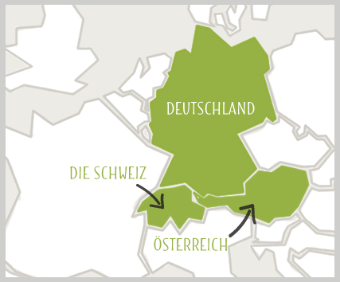

Deutsch A101 - Einführung
Sekilas Info mengenai Bahasa Jerman
Jerman adalah bahasa resmi di beberapa negara seperti Jerman, Swiss dan Austria. Bahasa Jerman digunakan oleh sekitar 130 juta orang di dunia dan memiliki beberapa anak bahasa seperti bahasa Inggris, Belanda, Swedia, Norwegia, Denmark dan lain lain.

| Deutsch | Indonesisch | Audio |
|---|---|---|
| Deutschland | Jerman | |
| Österreich | Austria | |
| Die Schweiz | Swiss |
Bahasa Jerman memiliki beberapa abjad yang tidak ada dalam bahasa Indonesia. Akan tetapi abjad abjad tersebut hanyalah merupakan gabungan dari abjad latin biasa.
| Abjad Jerman | Abjad Latin | Disebut juga |
|---|---|---|
| ä | ae | a umlaut |
| ü | ue | u umlaut |
| ö | oe | o umlaut |
| ß | ss | eszett |
Sebagai contoh, kata mäßig dalam abjad Jerman bisa ditulis ulang dengan abjad Latin biasa : maessig
Tips:
Tidak punya keyboard Jerman ? Jangan kuatir, tetap bisa menggunakan abjad Jerman hanya dengan mengubah setting di komputer / smartphone ! Atau gunakan saja abjad latin pengganti seperti tabel di atas.
Berkenalan dengan Jens

Ini adalah Jens yang akan membantu anda lebih mengenal bahasa Jerman.
| Hallo ! | Halo ! | |
| Mein Name ist Jens | Nama saya Jens | |
| Ich spreche Deutsch | Saya bicara bahasa Jerman |
Jens telah memperkenalkan dirinya
Sekarang giliran anda !
| Mein Name ist | Nama saya ...... |
Keluarga Jens
Sebetulnya Jens ingin keluar dan mengajak anda berjalan jalan mengilingi kotanya di Jerman. Akan tetapi pandemi Covid-19 mengharuskan dia harus tetap di rumah. Karena itu Jens mengenalkan keluarganya kepada anda.
Agar bisa mengenal keluarga Jens maka kita akan menggunakan kata kerja utama dalam bahasa Jerman yaitu sein. Fungsi sein bisa disebut sama dengan kata kerja be dalam bahasa inggris.
| Deutsch (sein) | Englisch (be) | Audio |
|---|---|---|
| ich bin | i am | |
| du bist | you are (informal) | |
| Sie sind | you are (formal) | |
| er ist | he is | |
| sie ist | she is | |
| es ist | it is | |
| ihr seid | all of you are (informal) | |
| sie sind | all of you are (formal) | |
| wir sind | we are | |
| sie sind | they are |
Untungnya keluarga Jens sedang berada di lantai bawah. Hanya ada anda dan Jens di lantai atas. Oleh karena itu Jens bebas berbicara mengenai keluarganya. Kira kira bagaimana pikiran Jens mengenai keluarganya sendiri ?
| der Brüder saudara lelaki |
Er ist klein und faul. | Dia pendek dan malas | |
| die Schwester saudara perempuan |
Sie ist schlank und dumm. | Dia langsing dan bodoh | |
| die Eltern orang tua |
Sie sind alt und mollig. | Mereka tua dan gempal | |
| das Haus rumah |
Es ist alt und schmutzig. | Itu tua dan kotor | |
| der Jens si Jens |
Ja, ich bin ehrlich! | Aku jujur ! |
Sekarang giliranmu. Coba perkenalkan keluargamu !
Formal dan Informal
Dalam bahasa Indonesia kita menunjukan rasa hormat dengan merubah kata panggilan. Misalkan kita mengatakan anda sebagai kata ganti dari kamu apabila berbicara dengan orang yang lebih tua, posisi sosial lebih tinggi atau dengan orang yang belum terlalu kenal.
Dalam bahasa Jerman kita juga menemukan hal yang sama.
| Kamu | du | |
| Anda | Sie | |
| Kalian semua (informal) | sie | |
| Bapak dan Ibu / Anda semua (formal) | Sie |
Jadi apabila nenek dari Jens datang dan menyapa anda. Kata panggil apa yang akan anda gunakan untuk menyapa dia ?
Tentunya gunakan kata ganti Sie ! Kecuali anda sudah bosan hidup ^_^
| Sprechen Sie Deutsch ? | |
|---|---|
Yang artinya adalah : Apakah Anda berbahasa Jerman ?
Informasi Kultur
Karena kamu dalam bahasa jerman adalah du, menggunakan bahasa akrab satu dengan yang lain disebut juga duzen dalam bahasa Jerman. Sedangkan karena anda dalam bahasa Jerman adalah Sie maka menggunakan bahasa formal / sopan disebut juga siezen.
Misalkan anda sudah cukup akrab dengan seseorang. Dimana pada awalnya kalian selalu menggunakan siezen satu dengan yang lain. Mungkin setelah beberapa lama teman anda akan bertanya : "Können wir duzen?" yang artinya "Bisakah kita menggunakan kata du ?"
Ini menunjukan bahwa hubungan kalian sudah tidak terlalu formal lagi dan anda sudah dianggap teman olehnya.
Apabila kalian sudah bekerja di rumah sakit maka pasien atau pegawai rumah sakit yang belum terlalu akrab dengan kalian kemungkinan besar akan menggunakan siezen ketika berbicara dengan kalian. Misalkan nama anda Anton Suwanto maka anda akan dipanggil Herr Suwanto atau bapak Suwanto. Maka dari itu penting untuk sedikit sedikit membiasakan diri dipanggil dengan nama keluarga dan juga membiasakan memanggil lawan bicara dengan nama keluarga mereka.
Deutsch und Englisch

Karena bahasa Inggris dan bahasa Jerman merupakan sama sama anak bahasa dari bahasa Jerman kuno maka ada banyak kesamaan antara kedua bahasa ini.
Ketika sedang naik kereta api Jens bertemu seorang wanita cantik yang berasal dari Inggris. Sayangnya Jens jarang melatih bahasa Inggrisnya. Karena bahasa Jerman dan Inggris mempunyai kemiripan, Jens tetap mencoba untuk mendekati wanita itu sebisanya. Ia berharap dengan menggunakan kata kata di bawah ini si wanita itu mengerti dia.
| Deutsch | Englisch | |
|---|---|---|
| hallo! | hello | |
| gut! | good! | |
| der Film | movie / film | |
| der Freund | boyfriend | |
| das Restaurant | restaurant |
Bagaimana menurutmu? Apakah Jens akan berhasil?
Denglisch
Anak anak muda di Jerman suka menggunakan bahasa Inggris karena bagi mereka itu cool!
Deutsch + Englisch = Denglisch
Akan tetapi bagi nenek Jens, menggunakan campuran Deutsch dan Englisch sama sekali tidak kerenl
Jadi apabila anda juga mempelajari bahasa Jerman dengan menggunakan material tambahan seperti video video dari Youtube, Instagram dsb-nya perhatikan apakah pembicara menggunakan Denglisch. Tentunya Denglisch tidak membantu anda untuk bisa berbahasa Jerman yang baik dan benar, apalagi untuk lulus ujian bahasa Jerman !